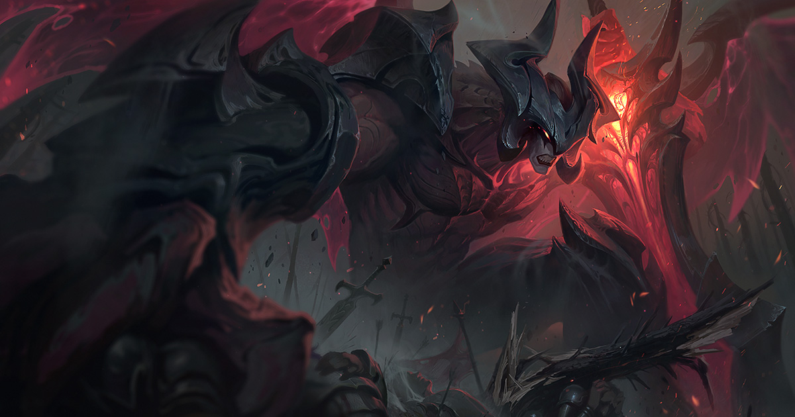
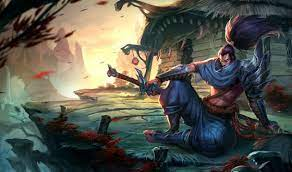

1 - Viego, o Rei Destruído

Outrora regente de um reino perdido, Viego morreu há mais de um milênio, quando uma tentativa de trazer sua esposa de volta à vida culminou em uma catástrofe mágica conhecida como "a Ruína". Transformado em um poderoso espectro morto-vivo, e sempre sendo torturado pela paixão obsessiva que sente por sua rainha morta há séculos, Viego agora é conhecido como o Rei Destruído. Hoje, ele controla os Tormentos enquanto assola Runeterra em busca de qualquer coisa que possa trazê-la de volta, destruindo tudo que estiver em seu caminho conforme a Névoa Negra emana de seu cruel coração partido.
2 - Kayn, o Ceifador das Sombras

Inigualável praticante da letal magia sombria, Shieda Kayn luta para alcançar seu verdadeiro destino: um dia comandar a Ordem das Sombras rumo a uma nova era de supremacia ioniana. Indiferente à maquiavélica degradação que ela causa em seu corpo e mente, ele empunha uma senciente arma darkin chamada Rhaast. Só duas coisas podem acontecer: ou Kayn faz a arma obedecê-lo... ou a foice maligna o consumirá completamente, preparando o terreno para a destruição de toda Runeterra.
3 - Sett, o Chefe

Líder de parte do próspero submundo do crime em Ionia, Sett deve todo o seu sucesso à guerra contra Noxus. Mesmo estreando como um simples desafiante nas arenas de combate em Navori, ele logo conquistou notoriedade com sua força bruta e capacidade de suportar dor contínua e extrema. Agora, após superar todos os combatentes locais, Sett chegou até o topo e reina sobre as arenas onde um dia lutara.
4 - Aatrox, a Espada Darkin
Antes defensores honrados de Shurima contra o temido Vazio, Aatrox e seus irmãos acabaram se tornando uma ameaça ainda maior para Runeterra, e a única coisa capaz de derrotá-los foi um tipo de feitiçaria mortal e traiçoeira. Mas após séculos de encarceramento, Aatrox foi o primeiro a encontrar a liberdade novamente, e ele saiu corrompendo e transformando quem fosse tolo o suficiente de tentar tocar na arma mágica que continha sua essência. Agora, com um corpo roubado, ele vaga por Runeterra transfigurado, em uma versão bizarra da sua forma anterior, buscando uma vingança apocalíptica.
5 - Irelia, a Dançarina das Lâminas

A ocupação noxiana de Ionia produziu muitos heróis, mas nenhum era mais improvável do que a jovem Irelia de Navori. Treinada nas antigas danças de Ionia, ela adaptou sua arte à guerra, usando movimentos graciosos e cuidadosamente executados para levitar uma série de lâminas fatais. Após provar seu valor como guerreira, ela foi nomeada líder e representante da resistência e até hoje se dedica à preservação de sua terra natal.
6 - Yone, o Inesquecido

Em vida, ele foi Yone; meio-irmão de Yasuo e um respeitado aluno da escola de espadachins de seu vilarejo. Mas, ao morrer pelas mãos do irmão, ele se viu perseguido por uma entidade maligna do reino espiritual e foi forçado a exterminá-la com sua própria espada. Agora, condenado a usar uma máscara demoníaca com o rosto da entidade, Yone busca incansavelmente essas criaturas para tentar entender o que ele mesmo se tornou.
7 - Akali, a Assassina Renegada

Abandonando a Ordem Kinkou e seu título de Punho das Sombras, Akali agora ataca sozinha, pronta para ser a arma mortal que seu povo precisa. Embora ela mantenha tudo o que aprendeu com seu mestre Shen, ela se comprometeu a defender Ionia de seus inimigos, um assassinato de cada vez. Akali pode atacar em silêncio, mas sua mensagem será ouvida em voz alta e clara: “Temam a assassina sem mestre”.
8 - Pyke, o Estripador das Águas Sangrentas

Um arpoador renomado vindo das Docas da Matança nas Águas de Sentina, Pyke deveria ter encontrado sua morte na barriga de um gigante Peixe-Jaula... mas, ainda assim, ele retornou. Agora, vagando pelos becos úmidos de sua cidade natal, ele usa seus novos dons sobrenaturais para trazer um rápido e grotesco fim para aqueles que fazem fortuna explorando os outros. Hoje, os mesmos habitantes da cidade que se orgulham de caçar monstros estão sendo caçados por um.
9 - Yasuo, o Imperdoável
Yasuo, um ioniano extremamente determinado, é também um ágil espadachim que usa o próprio ar como arma para enfrentar seus inimigos. Quando jovem, ele teve seu orgulho ferido ao ser acusado injustamente do assassinato de seu mestre — sem conseguir provar sua inocência, ele foi forçado a matar o próprio irmão para se defender. Até hoje, mesmo depois do verdadeiro assassino do seu mestre ter sido revelado, Yasuo ainda não consegue se perdoar e vaga por sua terra natal com apenas o vento para guiar sua espada.
10- Evelynn, o Abraço da Agonia

Nas ruelas sombrias de Runeterra, a criatura demoníaca Evelynn busca sua próxima vítima. Ela atrai presas com sua voluptuosa aparência de fêmea humana, mas assim que a vítima sucumbe ao seu charme, a verdadeira forma de Evelynn é revelada. A criatura então sujeita suas vítimas a um tormento inenarrável, gratificando-se com a dor alheia. Para ela, esses contatos são casinhos inocentes; Para o resto de Runeterra, são histórias macabras de encontros lascivos que deram errado e lembretes terríveis sobre o custo do desejo desenfreado.